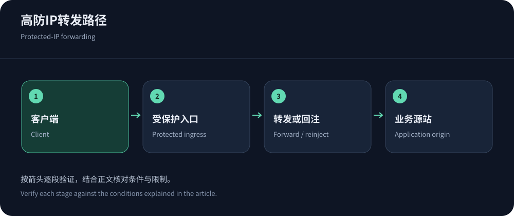
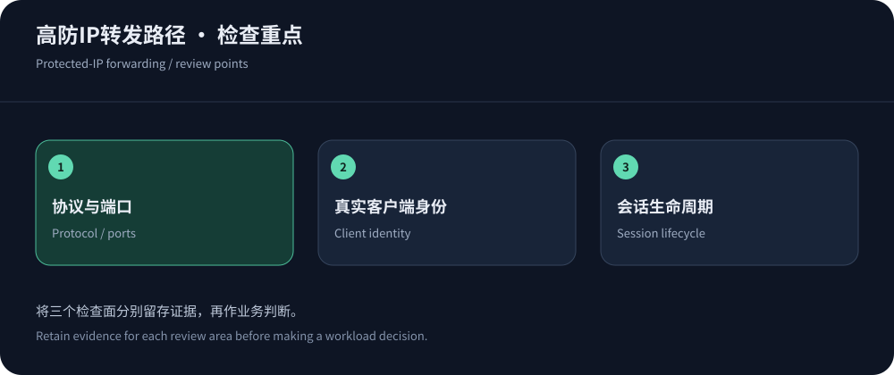

A protected IP provides a defended ingress
A protected IP generally receives connections through mitigation before forwarding legitimate traffic to the application. Implementations vary; verify proxy, forwarding or network behavior. The name alone does not establish all-protocol coverage.
Inventory protocols, ports, origin regions, session lifetime and client-address requirements. AWS TCP/UDP guidance distinguishes non-Web ingress. Information was checked on 14 October 2026; no attack benchmark is claimed.
The traffic path determines configuration
Forwarding must map ingress to origin ports and define session behavior. Origins may see proxy addresses; client identity needs a supported trusted mechanism. A TCP proxy does not automatically provide HTTP semantics.
Verify forward/return/reinjection paths, asymmetry, MTU and connection behavior. For TLS, identify termination, certificate ownership and origin verification. Ask what “pass-through” means in that particular product.


Choose protected IP or protected CDN by workload
Both may mitigate DDoS, but their content and protocol capabilities differ. A protected CDN typically understands HTTP/cache semantics, while a protected-IP product handles supported connections. Verify purchased scope.
| Question | Protected-IP direction | Protected-CDN direction |
|---|---|---|
| Protocols | Verify TCP/UDP, ports and application support. | Typically HTTP/HTTPS and supported WebSocket; verify non-Web separately. |
| Content caching | Forwarding does not inherently cache objects or reduce computation. | Can reuse public responses with correct identity/write boundaries. |
| Client identity | Check client-address transport and application support. | Validate trusted headers/sessions/counters. |
| Sessions/recovery | Check lifetime, mappings, reinjection and reconnect. | Also validate cache, certificates, WAF and updates. |
One IP address does not define the price
Charges can include ingress, ports, delivery, sessions, protection tiers, transit, scrubbing, reinjection and support. Equal address counts do not imply equal entitlements. Define metering and over-limit actions.
CDN5 lists a protected-IP product, but its homepage CDN prices are not protected-IP quotes. AWS Shield pricing illustrates separate subscription/resource costs, not universal IP rates. Request missing prices instead of inventing ranges.
Hiding the origin requires closing bypasses
Historical DNS, sibling services and IPv6 can expose origins after migration. Restrict trusted forwarding and operations while preserving checks and maintenance. Any necessary direct entrance needs explicit ownership and protection.
Test authorized and unauthorized paths separately. Own and version firewall updates so reinjection-address changes do not block legitimate service. Inventory standby/test mappings and retire unused entrances.
Test the full session lifecycle
Test normal traffic, idle periods, heartbeat, disconnect and reconnect—not merely establishment. UDP has different semantics but may still depend on mapping/timeouts. A short request test cannot establish persistent-session stability.
Use authorized normal protocol samples and measure both ends. Validate TLS modes and backoff to avoid synchronized reconnect peaks. See game protection.
Application work still needs its own controls
For HTTP, protected IPs do not automatically include full WAF/cache/bot capability. Protocol-valid requests can still trigger expensive work, requiring authentication, validation and work limits. Correlate ingress, reinjection and application logs.
When ingress cannot interpret business cost, enforce authentication, message and query budgets in the application, tracking refusals and retries.


Acceptance includes failover and exit
Document protocols, allowances, incidents, limits, logs, support and costs. Exercise protected switching and session recovery; handle untested capacity through explicit scope rather than attacks on public networks.
Export mappings/configuration at exit, coordinate address/TLS/firewall transitions and revoke old access. See architecture comparison and CISA response guidance.